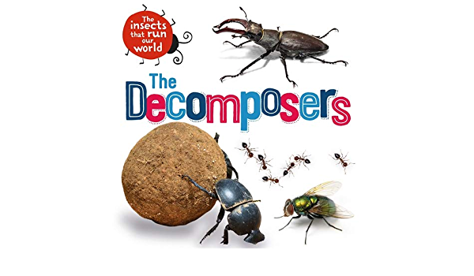

FOOD CHAIN
THE SUN

The Sun is the very beginning of our food chain.The Sun provides the energy for plants to undergo photosynthesis, which begins the food chain. Producers in a food chain or food web take the sun's light and convert it into food through sun is the initial The source of energy, which provides energy for everything on the planet.photosynthesis. This group composes the largest group of organisms on Earth. Sugar results from photosynthesis, wherein plants or algae take sunlight, carbon dioxide and water and produce food (sugar) and oxygen. Effectively, the sun's energy triggers the beginning of the energy transfer in the food web.
PRODUCERS

The producers in a food chain include all autotrophs such as phytoplankton, cyanobacteria, algae, and green plants. This is the first stage in a food chain. The producers make up the first level of a food chain. The producers utilise the energy from the sun to make food. Producers are also known as autotrophs as they make their own food. Producers are any plant or other organisms that produce their own nutrients through photosynthesis.
CONSUMERS

Consumers are all organisms that are dependent on plants or other organisms for food. This is the largest part of a food web, as it contains almost all living organisms. It includes herbivores which are animals that eat plants, carnivores which are animals that eat other animals, parasites that live on other organisms by harming them and lastly the scavengers, which are animals that eat dead animals’ carcasses.
DECOMPOSERS
Decomposers are organisms that get energy from dead or waste organic material. This is the last stage in a food chain. Decomposers are an integral part of a food chain, as they convert organic waste materials into inorganic materials, which enriches the soil or land with nutrients. Decomposers complete a life cycle. They help in recycling the nutrients as they provide nutrients to soil or oceans, that can be utilised by autotrophs or producers. Thus, starting a whole new food chain